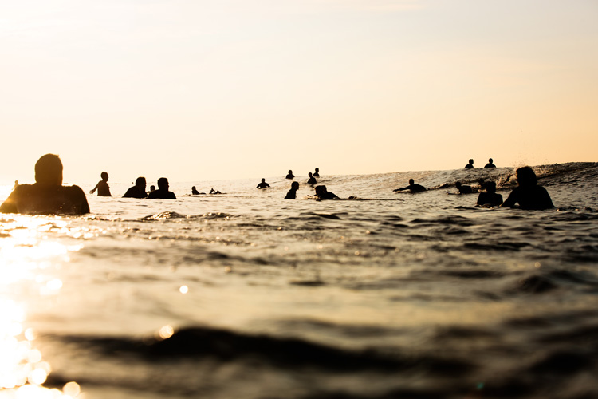

READ ALL
ABOUT IT

Surfers are reknown for being laidback and 'chill'. Usually they are are well tempered and caring. However, there are many places throughout the world that become well known and draw in tourists from far and wide.
Though surf break fame is undoubtly a great thing for the small locations that are immensely boosted by the touring surfer population, the local surfers experience in the water is deminished.
The more well known a place gets, the more crowded it gets. Due to the new found lack of space in the water for catching waves, the competition between surfers can reach a point where it becomes toxic.
Generally, the hostility stems from local surfers who feel hard done by and hold a territorial claim to their local surfing spots. This hostility is coined 'Localism' in the surfing community. The aggression can often turn physical or lead to vandalism of equipment.
Body language plays a big role in human society, as does the ability to understand the need to follow unwritten rules for the greater good of peace for all.
Surfing is no different and there are a number of rules that should be followed in the water by all to keep everything in check.
Here is what to do to not piss off the locals:
Abiding by these simple rules can save a lot of heartache for all involved. Avoiding serious injury and damaged equipment is in the interest of every surfer so do your part and follow the rules.

Etiquette & Localism
- Respect the locals
- Respect the beach (only leave footprints)
- Help other surfers in trouble
- Stay within your skill level (resist paddling out to big waves you cannot handle)
- Understand that the person nearest to the peak has priority on the coming wave
- Never paddle into the path of someone surfing down the line (they're on the wave so have priority)
- If the crowd is frustrating you, leave
- NEVER drop in on someone, always be aware what is left and right of you
- Apologise if you make a mistake
- Have fun out there!
Date : Tues 4th October 2022
Author : Brian Jacobs
Photogapher : Luke Quinn